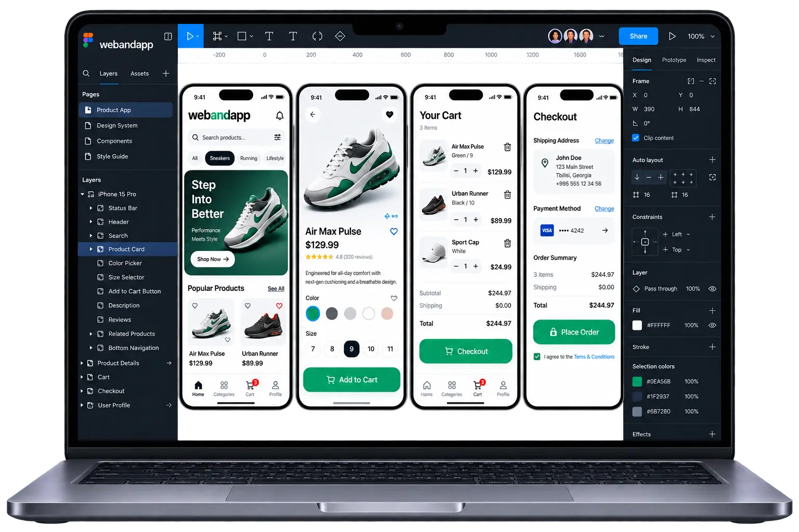

რა პრობლემას აგვარებს
დაბნეული ნავიგაცია, გაუგებარი ღილაკები ან გრძელი ფორმა მომხმარებელს აფერხებს. პროტოტიპი საშუალებას გვაძლევს ეს სირთულეები სრულ პროგრამირებამდე შევამჩნიოთ.
ვისთვის არის განკუთვნილი
ახალი ციფრული პროდუქტის ავტორები და ბიზნესი, რომელსაც არსებული საიტის ან აპლიკაციის გამოცდილების გაუმჯობესება სურს.
რას შეიძლება მოიცავდეს პროექტი
- მომხმარებლის გზები და ინფორმაციის სტრუქტურა
- ეკრანების საწყისი სქემები და პროტოტიპი
- ვიზუალური კომპონენტები და მათი მდგომარეობები
- დეველოპერისთვის გადასაცემი დიზაინის ფაილები
მუშაობის ეტაპები
1. გაცნობა
ვაზუსტებთ მიზანს, აუდიტორიას და საჭირო ფუნქციებს.
2. დიზაინი
ვათანხმებთ სტრუქტურას, ვიზუალურ სტილსა და მომხმარებლის გზას.
3. შექმნა
ვაწყობთ და ვამოწმებთ პროექტის შეთანხმებულ ფუნქციებს.
4. გაშვება
ვამზადებთ გამოქვეყნებას, წვდომებს და შემდგომი მოვლის გეგმას.
ტექნოლოგიის შერჩევა
საბოლოო ტექნოლოგიები შეირჩევა მოთხოვნების განხილვის შემდეგ. ქვემოთ მოცემულია შესაძლო მიმართულებები.
რა მოქმედებს ვადაზე
ეკრანების რაოდენობა, რთული მდგომარეობები, კვლევის მოცულობა და ტესტირების საჭიროება განსაზღვრავს სამუშაოს ვადას.
რა მოქმედებს ფასზე
ღირებულება დამოკიდებულია სცენარებზე, დიზაინის სისტემის მასშტაბზე, კვლევასა და შეთანხმებული შესწორებების მოცულობაზე.
ფასები ↗რატომ webandapp
ჩვენი მიდგომაა ამოცანის წერილობით ჩამოყალიბება, ეტაპობრივი შეთანხმება და გადასაცემი შედეგის წინასწარ აღწერა. თქვენ ხედავთ რას მოიცავს სამუშაო და რა საჭიროებს ცალკე გადაწყვეტილებას.
პორტფოლიო
ნამუშევრები და მათი ისტორია
პროექტების აღწერები დაემატება რეალური მასალებისა და გამოქვეყნების თანხმობის მიღების შემდეგ.
ხშირი კითხვები
UI და UX რით განსხვავდება?
UX მოიცავს ამოცანის შესრულების გზასა და გამოცდილებას, UI კი ხილულ ინტერფეისსა და მის კომპონენტებს. ორივე ერთად უნდა მუშაობდეს.
პროტოტიპი მოქმედი აპლიკაციაა?
არა. ის ეკრანებსა და მათ შორის გადასვლებს აჩვენებს; სერვერის რეალური ფუნქციები ცალკე პროგრამირებას საჭიროებს.
არსებული ბრენდის სტილს გამოიყენებთ?
დიახ. მოგვაწოდეთ ლოგო, ფერები, შრიფტები და არსებული წესები. საჭირო ცვლილებები წინასწარ შეთანხმდება.
მობილური დიზაინიც შედის?
ეკრანის ზომები და შესაბამისი მდგომარეობები სამუშაოს აღწერაში იწერება. ვებგვერდისთვის მობილური გამოცდილება აუცილებელი ნაწილია.
ფაილებს მივიღებ?
გადასაცემი ფაილები და გამოყენების უფლებები წინასწარ განისაზღვრება. სასურველია დიზაინი დეველოპერს სტრუქტურირებულად გადაეცეს.